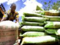
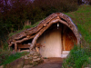

Ressources pour les formations
Nous visons à regrouper des ressources (liens, documents) de qualité et adaptées aux réalités des pays du sud en matière d'environnement. Vous avez des suggestions ou commentaires? Contactez-nous!
Les documents que vous trouvez ici nous ont été fournis par divers organismes; vous trouverez les informations pertinentes sur le copyright dans chaque PDF.
TEXTES GÉNÉRAUX SUR LA PROBLÉMATIQUE ENVIRONNEMENTALE : DÉVELOPPEMENT DURABLE et SURVOL DE LA CRISE ÉCOLOGIQUE


Fiches pédagogiques sur l'environnement

AGRICULTURE URBAINE

Dossier sur l'écologie urbaine (voir aussi les autres liens):

Guide pratique pour la construction de jardins sur les toits.

Un site intéractif pour donner des idées de jardin à l'école:
AGRICULTURE


Survol d'articles sur les cordons pierreux, zaï et autres techniques de regénérescence des sols

Une foule d'idées de projets (biochar, éoliennes, agriculture, énergies, etc.) adaptées aux pays chauds
L'ARBRE ET LE REBOISEMENT

Guide de reboisement (techniques et suggestions de plantes)


Une foule d'informations sur des techniques de reforestation.
QUALITÉ DE L'AIR ET LES EFFETS DE LA COMBUSTION DU PLASTIQUE


http://cesifs.emse.fr/BULLES/BULLES-1/air/pagesair/plastiques.html

http://www.infoxygene.com/dossiers/article.php?id=103
GESTION DES DÉCHETS

Doc sur la gestion et le cycle de vie des déchets


www.recyc-quebec.gouv.qc.ca
GESTION DES SOLS


CONSTRUCTION ÉCOLOGIQUE (des idées pour construire différement)

Une extraordinaire maison couverte de terre (en anglais)
CHANGEMENTS CLIMATIQUES
Animations amusantes "Le climat, ma planète... et moi !"

Éducation relative à l'environnement: Guide pédagogique sur les changements climatiques
Kit pédagogique de l'UNESCO sur la désertification
BIODIVERSITÉ

Très intéressant: à propos de la biodiversité: (il faut cliquer sur les chiffres en haut)
ACTUALITÉ SCIENTIFIQUE
RESSOURCES PÉDAGOGIQUES POUR ENSEIGNANTS ET ÉLÈVES


liens vers des ressources pour les enseignants en science

AUTRES RESSOURCES


liens intéressants sur des ressources éducatives